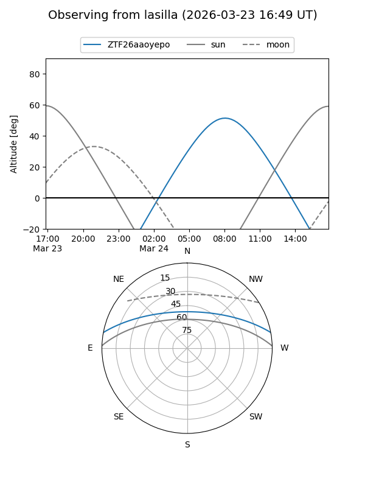
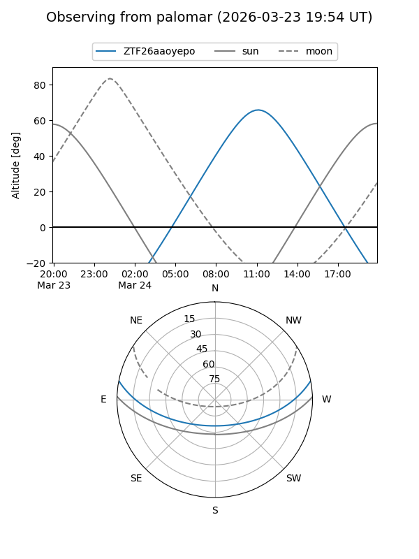

ZTF26aaoyepo
Target ZTF26aaoyepo at 2026-03-23 13:29
Aliases and brokers:
FINK: link
Lasair: link
ALeRCE: link
alt names
ZTF26aaoyepo (ztf,fink_ztf)
Coordinates:
equatorial (ra, dec) = 231.4587,+9.35572
equatorial (HMS+DMS) = 15:25:50.08,+09:21:20.58
galactic (l, b) = (14.3501,+49.50177)
Flags:
Photometry:
last ztfg=19.04
1 ztfg detections
Lightcurve
Visibility


Additional plots